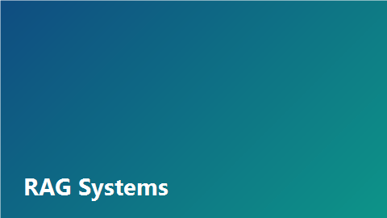
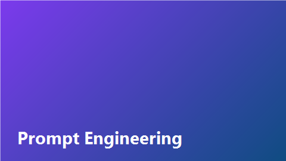

База знаний
Показано 3 из 6
Ничего не нашли
По запросу нет материалов для аналитиков — уточните фильтры или предложите тему.

Building Production RAG Systems
Гибридный поиск по корпоративной базе знаний с reranking…

SQL-дашборды для аудиторской отчётности
Шаблоны витрин и дашбордов для ежемесячной отчётности аналитика СВА…

pgvector for Enterprise Search
PostgreSQL + pgvector как основа корпоративного семантического поиска…

Контроль качества данных (DQ) в пайплайнах СВА
Чек-листы DQ и SQL-проверки полноты витрин перед отчётным циклом…

LangGraph Multi-Agent Systems
Оркестрация агентов для многошаговых задач анализа данных…
KPI-дашборд цикла аудита
Визуализация сроков, выборки и покрытия контролей для senior-аналитика…